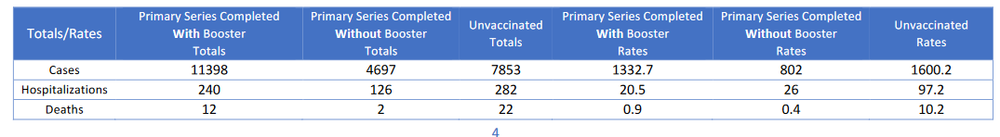

The Scorecards
Intro
The Pandemic Tracking Collective is working with The Rockefeller Foundation’s Pandemic Prevention Institute to survey U.S. vaccine breakthrough infection (BI) data by U.S. states and territories with over 500,000 people. Our scorecard defines and measures best practices for complete and meaningful reporting of Covid-19 vaccine BI data. We assign states letter grades based on their alignment with these best practices. You can read more about why we selected these best practices in our announcement blog post and in this best practices document we sent to states.
This scorecard does not evaluate how well state health officials are responding to Covid-19 overall, but instead specifically reflects the completeness of each state’s publicly available vaccine breakthrough data reporting and presentation, with a focus on data transparency and interpretability. Additionally, many health departments that do not share BI data publicly face insurmountable technical obstacles to collecting data caused by decades of chronic underfunding. Bear this in mind for states receiving especially low grades.
Our scorecard focuses on the U.S. since states began reporting BI data when global reporting was still scarce; we hope to draw out lessons in best practices that could apply both in the U.S. and globally.
Scorecard and Criteria
Our state scoring system uses 29 criteria to calculate the grade for each state and territory we track. (We use “state” throughout to refer to states, territories, and the District of Columbia.)
Most recent scorecard
Data Reporting
These criteria measure whether a state is publishing complete breakthrough data, as well as non breakthrough data during the same time period. You can see the exact metrics and evaluation criteria in the Data Dictionary tab of the spreadsheet above.
Cumulative counts
- Cumulative counts of breakthrough infection (BI) and non-breakthrough infection (non-BI) cases
- Cumulative counts of BI and non-BI hospitalizations
- Cumulative counts of BI and non-BI deaths
Percentages
- Cases as a percent of fully vaccinated and not fully vaccinated individuals
- Hospitalizations as a percent of fully vaccinated and not fully vaccinated individuals
- Deaths as a percent of fully vaccinated and not fully vaccinated individuals
Recent Rates
- Recent rates of Covid-19 cases, hospitalizations and/or deaths by vaccination status
- Recent rate ratios of Covid-19 cases, hospitalizations and/or deaths by vaccination status
Time series
- Covid-19 outcomes over time as counts and rates per capita by vaccination status
- Covid-19 cases by vaccination status
- Covid-19 hospitalizations by vaccination status
- Covid-19 deaths by vaccination status
- Population fully vaccinated and not fully vaccinated over time
Booster Status
- Covid-19 outcomes in boosted individuals
- Cumulative outcomes by vaccination status, including in boosted individuals
- Time series of outcomes among all vaccination statuses, including in boosted individuals
- Other breakthrough infection data by booster status
Data Presentation
These criteria evaluate how well states contextualize, format and publish their Covid-19 data.
Definitions
- BI Cases
- BI Hospitalizations
- BI Deaths
- Vaccination Status
- Rate methodology
Data Availability
- Data available to download in a machine readable format
- Data updated regularly (at least monthly)
Best Practices Guide
About This Document
This document summarizes our view of some reporting best practices states should adopt to fill in critical data reporting gaps, based on our goal of helping states provide the most transparent, interpretable, and harmonized vaccine and booster breakthrough data.
What Data Should States Publish?
| Cases |
|
| Hospitalizations |
|
| Deaths |
|
| Recent Rates |
|
| Vaccination Status |
|
| Time series |
|
| Rates |
|
| Age |
|
| Vaccine manufacturer |
|
| Time since vaccination |
|
How Should States Publish Data?
| Update | Update data on a regular cadence (at least monthly) |
| Include Timestamps | Post the date range the data reflects |
| Downloadable Data | Provide breakthrough data in a downloadable format |
Frequently Asked Questions
Why is it important to report vaccine breakthrough data?
First of all, reporting cases, hospitalizations and deaths by vaccination status increases public trust in government response through demonstrating a commitment to transparency. Second, since this data shows the clear trend that COVID-19 hospitalization and deaths are concentrated in unvaccinated individuals, sharing this data can help overcome vaccine hesitancy. Finally, vaccine breakthrough data provides crucial early warning signals for possible changes in transmission or disease dynamics, such as if there are changes to vaccine efficacy from new variants.
Why is it important to report outcomes for boosted individuals in addition to outcomes for individuals who are fully vaccinated who may not have received an additional vaccine dose?
Protection provided by the primary COVID-19 vaccine series wanes over time. Research indicates that booster doses are more protective against severe outcomes compared to the primary vaccine series alone. This has been especially true during the omicron surge. Reporting outcomes by vaccine booster status allows for a more complete understanding of vaccine performance and any changes in transmission or disease dynamics. Reporting these data may also reduce booster vaccine hesitancy in those who are fully vaccinated but have not received an additional COVID-19 vaccine dose and emphasize that while one or two doses were the dosing schedules studied initially, they may continue to be refined as new data come in.
Why is it important to provide definitions for all metrics reported?
In the absence of nationally-standardized definitions, states have used an array of reasonable approaches to defining their vaccine breakthrough metrics. These differences mean data between states may not always be completely comparable and clear definitions will allow a data user to understand possible sources of disparity between states. A chronology of changes in metric definitions will also allow a data user to understand when changes in metrics are the result of these underlying definitional changes rather than a change in real-world trends.
Why is it important to publish time series of vaccination breakthroughs and not just cumulative data?
Time series data illuminate changes over time in vaccine effectiveness and allow for detection of emerging viral variant trends. Cumulative data does not allow for an understanding of trends and, if aggregated into a time series by an external entity, can provide a misleading portrayal due to the effect of reporting delays or data dumps.
Why is it important to publish recent rates and rate ratios of vaccine breakthrough outcomes?
Recent data illuminate the current state of the pandemic, given evolving immune statuses and fast moving variant trends. Highlighting the most recent data allows individuals and policymakers to make timely and localized decisions about risk tolerance based on relevant data.
Why is it important to describe the methodology used to calculate vaccine breakthrough incidence?
Just like with definitions for vaccine breakthrough cases, hospitalizations and deaths, in the absence of federal data standards, states use varying methodologies to calculate vaccine breakthrough incidence. For example, some states report rates per capita over the entire population while others report age-adjusted rates per capita. Clear methodology allows data users to understand the possible reasons for observed differences between rates reported by the states and when rates should not be considered comparable.
Why is it important to provide raw time series data in addition to rates?
Because states often use data that is not publicly available, apply tweaks like age-adjusting rates that the public cannot perform, or use complicated methodologies to calculate rates, it is usually impossible for the public to replicate rate calculations unless the state directly provides the data underlying the rate. For the purposes of public trust, transparency, and clarity, it is important to publish raw numbers in addition to rates.
Why should states report these data publicly if they are already reporting it to the CDC?
The current CDC data does not update frequently and does not include the ability to disaggregate vaccine breakthrough data by state. States have the ability to provide timely and actionable information to the public at a local level, allowing people to make educated decisions based on risks closer to home and on a more timely basis than federal data. States are also more likely to have the most insight into their own data streams and can quickly recognize both emerging trends as well as errors in the underlying data systems. Finally, by gathering and presenting data on local and regional levels in addition to the national trends, resiliency is built into data systems, allowing state data to act as back-ups in the event of a failure of federal data streams.
Examples of Best Practices in Data Reporting
California
Highlighted best practices:
- Provides counts, rates, and time series of cases, hospitalizations, and deaths by vaccination status, including in boosted individuals
- Reports numerator and denominator for rates calculations
- Machine-readable data table with a download option

Colorado
Highlighted best practices:
- COVID-19 cases, hospitalizations, and deaths over time by vaccination status, including booster status
- Machine-readable data table with a download option

Michigan
Highlighted best practices:
- Cumulative counts of fully vaccinated individuals and counts of vaccine breakthrough cases, hospitalizations, and deaths by vaccination status vaccination
- Percent of cases, deaths, and hospitalizations among fully vaccinated and not fully vaccinated individuals
- Percent of fully vaccinated individuals who had a breakthrough case, hospitalization, or death
Minnesota
Highlighted best practices:
- Clear definitions for vaccine breakthrough hospitalizations and deaths
- Machine-readable data table under graphics
- Includes detailed rate methodology, including listing the population age and whether rates are crude or age-adjusted
New Mexico
(click Download the Vaccination Report)
Highlighted best practices:
- Reports recent rates and rate ratios of cases, hospitalizations, and deaths by vaccination status during the past four weeks

Changelog
| Date | Change |
|---|---|
| 2/25/22 |
|
| 7/7/22 |
|
Last Updated: 7/7/22
Scorecard Archive
July 7 2022
June 2 2022
May 5 2022
April 7 2022